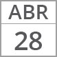
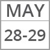
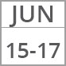

¿Qué es?
La Especialidad en Creatividad y Estrategia Publicitaria está estructurada para que sus egresados accedan al mercado profesional con una calificación más adecuada y su desempeño tenga un mayor impacto y aceptación en el campo de la Publicidad, respondiendo así a la necesidad de un programa académico de nivel posgrado en donde se profundice en este campo del conocimiento.
Duración: 2 semestres
Turno: vespertino de 17 a 21 h.
Clases martes, jueves y sábados
Objetivos de la especialidad
Se pretende formar a profesionistas capaces de:
· Brindar elementos teóricos y mercadológicos que permitan a sus egresados reconocer y aplicar estrategias para publicitar productos y servicios.
· Manejar las áreas técnicas y procesos específicos de la Publicidad como servicio profesional.
· Desarrollar estrategias publicitarias integrando sus conocimientos de Diseño para que de esta manera incidan en el mercado profesional de la Publicidad.
· Reconceptualizar la actividad publicitaria innovando en el mercado profesional, comprometiéndose con la calidad estética de la publicidad y, con un sentido ético que beneficie a la sociedad.
Admisión
El proceso de admisión de aspirantes a la Especialidad en Creatividad y Estrategia Publicitaria que se
imparten en la Escuela de Diseño se efectúa en dos etapas:
Primera Etapa

Registro por Internet en http://admon.bellasartes.gob.mx, a partir de las 9:30 am

Entrega de comprobante de pago por derecho a exámen de admisión
Entrega de carpeta profesional, carta de exposición de motivos y currículum
Resultados de aspirantes que pasa
a la Segunda etapa, a partir de las 12:00 horas, en www.facebook.com/edinba.oficial
Segunda Etapa

Presentar el cuestionario de “Perfil del aspirante”, dicho cuestionario conocer la formación académica, actividades recreativas y culturales, así como expectativas del aspirtante en cuanto su vocación profesional
A partir de éste día se llevarán a cabo las entrevistas de las 16:00 hrs a las 21:00 hrs (de lunes a viernes) y de 10:00 a 14:00 horas (los sábados) de acuerdo a las citas programadas en las listas publicadas con el número de folio
Último día de entrevistas programadas para la segunda etapa
Resultados de aspirantes que pasa a la Segunda etapa, a partir de las 12:00 horas, en www.facebook.com/edinba.oficial